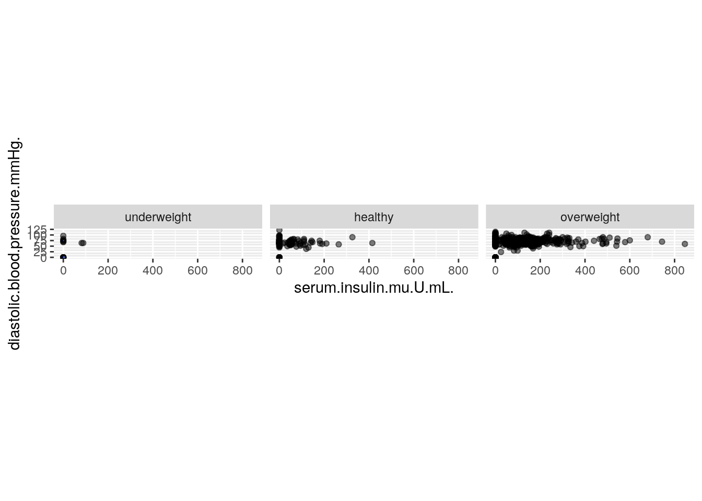
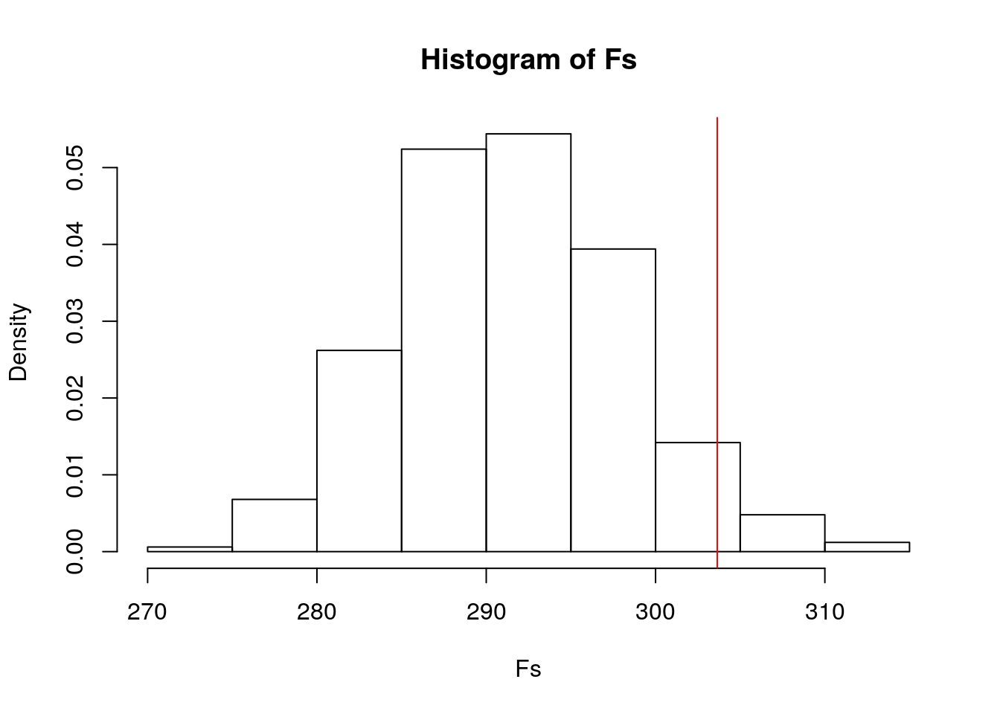
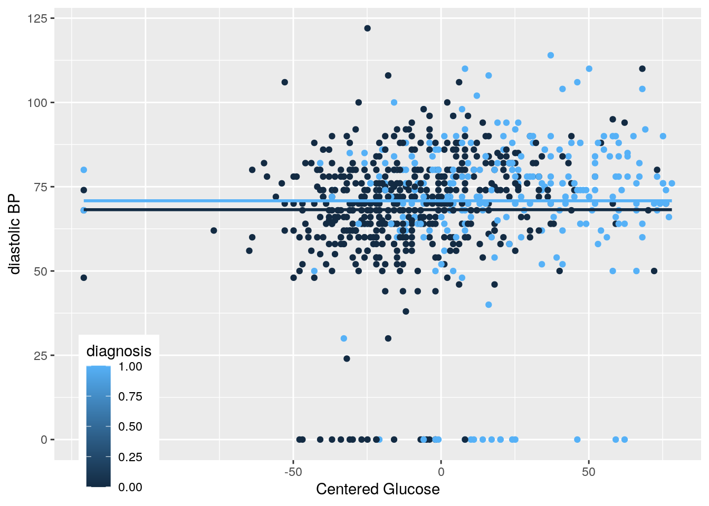
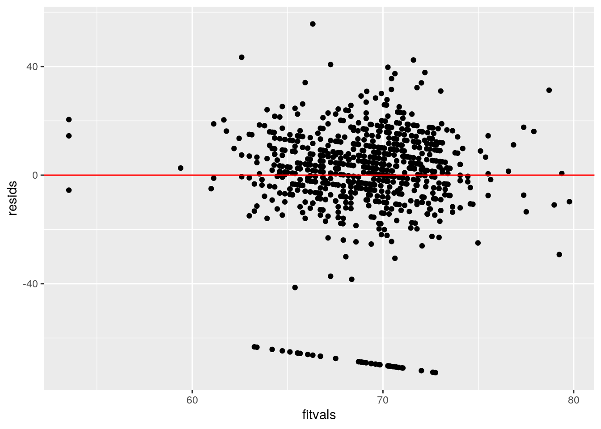
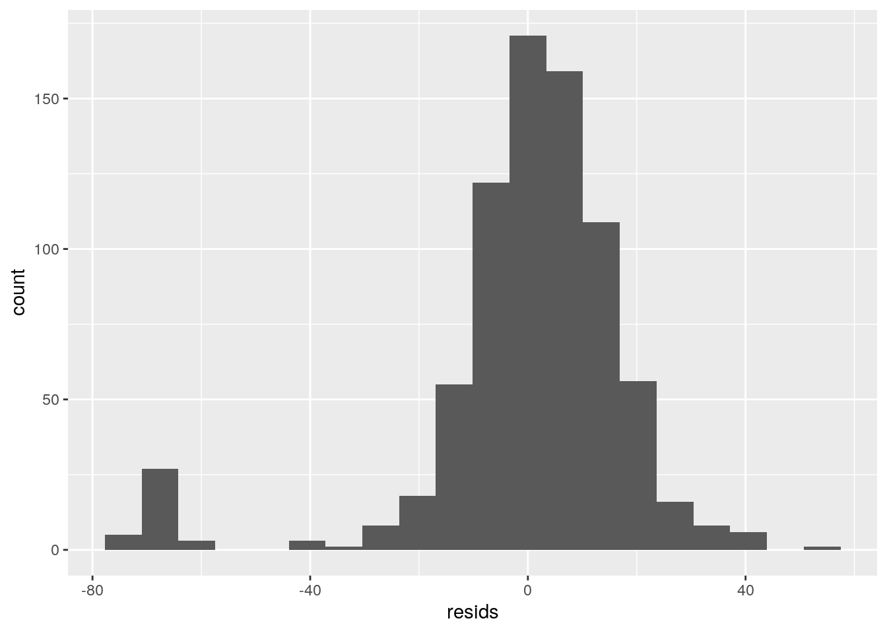
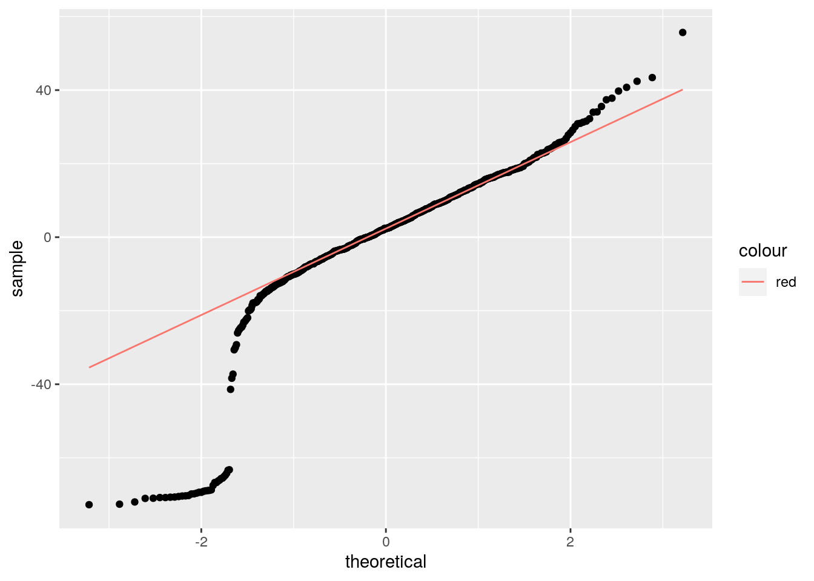
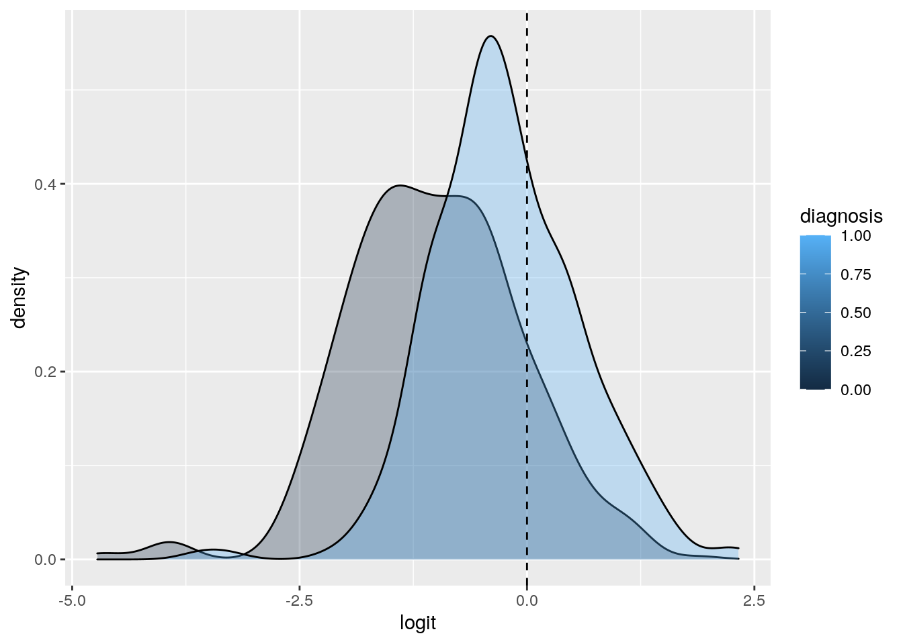
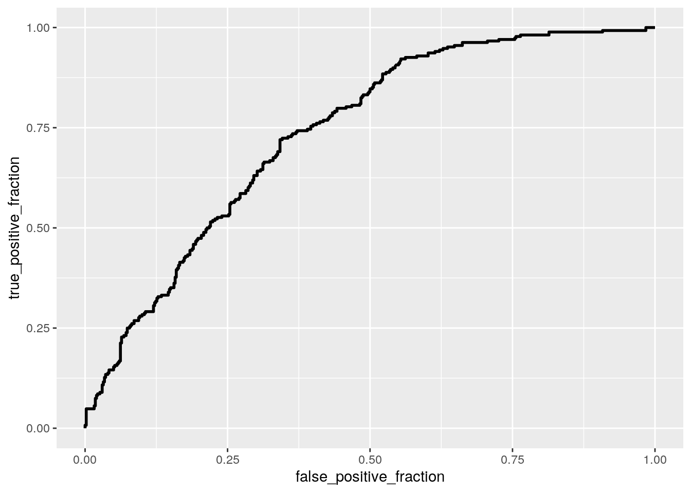

This is an R Markdown document. Markdown is a simple formatting syntax for authoring HTML, PDF, and MS Word documents. For more details on using R Markdown see http://rmarkdown.rstudio.com.
When you click the Knit button a document will be generated that includes both content as well as the output of any embedded R code chunks within the document. You can embed an R code chunk like this:
#Class diags function
class_diag<-function(probs,truth){
tab<-table(factor(probs>.5,levels=c("FALSE","TRUE")),truth)
acc=sum(diag(tab))/sum(tab)
sens=tab[2,2]/colSums(tab)[2]
spec=tab[1,1]/colSums(tab)[1]
ppv=tab[2,2]/rowSums(tab)[2]
if(is.numeric(truth)==FALSE & is.logical(truth)==FALSE) truth<-as.numeric(truth)-1
#CALCULATE EXACT AUC
ord<-order(probs, decreasing=TRUE)
probs <- probs[ord]; truth <- truth[ord]
TPR=cumsum(truth)/max(1,sum(truth))
FPR=cumsum(!truth)/max(1,sum(!truth))
dup<-c(probs[-1]>=probs[-length(probs)], FALSE)
TPR<-c(0,TPR[!dup],1); FPR<-c(0,FPR[!dup],1)
n <- length(TPR)
auc<- sum( ((TPR[-1]+TPR[-n])/2) * (FPR[-1]-FPR[-n]) )
data.frame(acc,sens,spec,ppv,auc)
}diabetes <- read.csv("diabetes_csv.csv")
#Making Categorical variable from bmi
diabetes <- diabetes %>% mutate(categoricalBMI = cut(BMI.kg.m.2., breaks = c(-Inf, 18.5, 25, Inf), labels=c("underweight","healthy","overweight")))
#MANOVA across categorical BMI
man1 <- manova(cbind(number.of.times.pregnant, plasma.glucose.concentration, diastolic.blood.pressure.mmHg., tricep.skin.fold.thickness.mm., serum.insulin.mu.U.mL., diabetes.pedigree.function, age.yrs.)~categoricalBMI, data=diabetes)
summary(man1) #significant## Df Pillai approx F num Df den Df Pr(>F)
## categoricalBMI 2 0.16062 9.481 14 1520 < 2.2e-16 ***
## Residuals 765
## ---
## Signif. codes: 0 '***' 0.001 '**' 0.01 '*' 0.05 '.' 0.1 ' ' 1#Univariate ANOVA
summary.aov(man1)## Response number.of.times.pregnant :
## Df Sum Sq Mean Sq F value Pr(>F)
## categoricalBMI 2 52.1 26.046 2.3017 0.1008
## Residuals 765 8656.5 11.316
##
## Response plasma.glucose.concentration :
## Df Sum Sq Mean Sq F value Pr(>F)
## categoricalBMI 2 30895 15447.3 15.69 2.099e-07 ***
## Residuals 765 753170 984.5
## ---
## Signif. codes: 0 '***' 0.001 '**' 0.01 '*' 0.05 '.' 0.1 ' ' 1
##
## Response diastolic.blood.pressure.mmHg. :
## Df Sum Sq Mean Sq F value Pr(>F)
## categoricalBMI 2 17186 8592.8 24.331 5.698e-11 ***
## Residuals 765 270169 353.2
## ---
## Signif. codes: 0 '***' 0.001 '**' 0.01 '*' 0.05 '.' 0.1 ' ' 1
##
## Response tricep.skin.fold.thickness.mm. :
## Df Sum Sq Mean Sq F value Pr(>F)
## categoricalBMI 2 16942 8471.1 36.358 8.24e-16 ***
## Residuals 765 178239 233.0
## ---
## Signif. codes: 0 '***' 0.001 '**' 0.01 '*' 0.05 '.' 0.1 ' ' 1
##
## Response serum.insulin.mu.U.mL. :
## Df Sum Sq Mean Sq F value Pr(>F)
## categoricalBMI 2 258418 129209 9.9559 5.389e-05 ***
## Residuals 765 9928247 12978
## ---
## Signif. codes: 0 '***' 0.001 '**' 0.01 '*' 0.05 '.' 0.1 ' ' 1
##
## Response diabetes.pedigree.function :
## Df Sum Sq Mean Sq F value Pr(>F)
## categoricalBMI 2 0.629 0.31474 2.8811 0.05668 .
## Residuals 765 83.571 0.10924
## ---
## Signif. codes: 0 '***' 0.001 '**' 0.01 '*' 0.05 '.' 0.1 ' ' 1
##
## Response age.yrs. :
## Df Sum Sq Mean Sq F value Pr(>F)
## categoricalBMI 2 550 274.95 1.9932 0.137
## Residuals 765 105529 137.95#'Serum insulin level,' 'tricep skin fold thickness,' 'diastolic blood pressure,' and 'plasma glucose concentration' are all significant and show mean difference across categorical BMI groups.
#Post-hoc t tests
pairwise.t.test(diabetes$serum.insulin.mu.U.mL.,diabetes$categoricalBMI, p.adj="none")##
## Pairwise comparisons using t tests with pooled SD
##
## data: diabetes$serum.insulin.mu.U.mL. and diabetes$categoricalBMI
##
## underweight healthy
## healthy 0.31954 -
## overweight 0.01062 0.00016
##
## P value adjustment method: nonepairwise.t.test(diabetes$tricep.skin.fold.thickness.mm.,diabetes$categoricalBMI, p.adj="none")##
## Pairwise comparisons using t tests with pooled SD
##
## data: diabetes$tricep.skin.fold.thickness.mm. and diabetes$categoricalBMI
##
## underweight healthy
## healthy 0.22 -
## overweight 1.7e-05 9.6e-14
##
## P value adjustment method: nonepairwise.t.test(diabetes$diastolic.blood.pressure.mmHg.,diabetes$categoricalBMI, p.adj="none")##
## Pairwise comparisons using t tests with pooled SD
##
## data: diabetes$diastolic.blood.pressure.mmHg. and diabetes$categoricalBMI
##
## underweight healthy
## healthy 2.8e-06 -
## overweight 4.8e-10 9e-04
##
## P value adjustment method: nonepairwise.t.test(diabetes$plasma.glucose.concentration,diabetes$categoricalBMI, p.adj="none")##
## Pairwise comparisons using t tests with pooled SD
##
## data: diabetes$plasma.glucose.concentration and diabetes$categoricalBMI
##
## underweight healthy
## healthy 0.546 -
## overweight 0.008 4.9e-07
##
## P value adjustment method: none24 + 6+1 #1 manova, 6 anova, and 24 t tests performed## [1] 31#At least one type 1 error
1-(1-.05)^31## [1] 0.7960932#Bonferroni correction
0.05/31## [1] 0.001612903#Assumptions
diabetes1 <- diabetes%>%select(number.of.times.pregnant, plasma.glucose.concentration, diastolic.blood.pressure.mmHg., tricep.skin.fold.thickness.mm., serum.insulin.mu.U.mL., diabetes.pedigree.function, age.yrs., categoricalBMI)
ggplot(diabetes1, aes(x = serum.insulin.mu.U.mL., y = diastolic.blood.pressure.mmHg.)) +
geom_point(alpha = .5) + geom_density_2d(h=2) + coord_fixed() + facet_wrap(~categoricalBMI)## Warning: stat_contour(): Zero contours were generated## Warning in min(x): no non-missing arguments to min; returning Inf## Warning in max(x): no non-missing arguments to max; returning -Inf## Warning: stat_contour(): Zero contours were generated## Warning in min(x): no non-missing arguments to min; returning Inf## Warning in max(x): no non-missing arguments to max; returning -Inf
covmats<-diabetes1%>%group_by(categoricalBMI)%>%do(covs=cov(.[2:5]))
for(i in 1:5){print(covmats$covs[i])}## [[1]]
## plasma.glucose.concentration
## plasma.glucose.concentration 309.55238
## diastolic.blood.pressure.mmHg. 306.38095
## tricep.skin.fold.thickness.mm. 14.90476
## serum.insulin.mu.U.mL. 74.05714
## diastolic.blood.pressure.mmHg.
## plasma.glucose.concentration 306.3810
## diastolic.blood.pressure.mmHg. 1532.5238
## tricep.skin.fold.thickness.mm. 163.5476
## serum.insulin.mu.U.mL. 297.2143
## tricep.skin.fold.thickness.mm.
## plasma.glucose.concentration 14.90476
## diastolic.blood.pressure.mmHg. 163.54762
## tricep.skin.fold.thickness.mm. 86.95238
## serum.insulin.mu.U.mL. 192.35714
## serum.insulin.mu.U.mL.
## plasma.glucose.concentration 74.05714
## diastolic.blood.pressure.mmHg. 297.21429
## tricep.skin.fold.thickness.mm. 192.35714
## serum.insulin.mu.U.mL. 906.82857
##
## [[1]]
## plasma.glucose.concentration
## plasma.glucose.concentration 759.97265
## diastolic.blood.pressure.mmHg. 126.98962
## tricep.skin.fold.thickness.mm. -57.27362
## serum.insulin.mu.U.mL. 293.12461
## diastolic.blood.pressure.mmHg.
## plasma.glucose.concentration 126.989616
## diastolic.blood.pressure.mmHg. 400.249221
## tricep.skin.fold.thickness.mm. 2.688474
## serum.insulin.mu.U.mL. 70.429907
## tricep.skin.fold.thickness.mm.
## plasma.glucose.concentration -57.273624
## diastolic.blood.pressure.mmHg. 2.688474
## tricep.skin.fold.thickness.mm. 102.980530
## serum.insulin.mu.U.mL. 299.224299
## serum.insulin.mu.U.mL.
## plasma.glucose.concentration 293.12461
## diastolic.blood.pressure.mmHg. 70.42991
## tricep.skin.fold.thickness.mm. 299.22430
## serum.insulin.mu.U.mL. 5194.26168
##
## [[1]]
## plasma.glucose.concentration
## plasma.glucose.concentration 1036.520357
## diastolic.blood.pressure.mmHg. 55.905564
## tricep.skin.fold.thickness.mm. 8.514685
## serum.insulin.mu.U.mL. 1266.018571
## diastolic.blood.pressure.mmHg.
## plasma.glucose.concentration 55.90556
## diastolic.blood.pressure.mmHg. 319.70024
## tricep.skin.fold.thickness.mm. 50.35773
## serum.insulin.mu.U.mL. 128.20880
## tricep.skin.fold.thickness.mm.
## plasma.glucose.concentration 8.514685
## diastolic.blood.pressure.mmHg. 50.357733
## tricep.skin.fold.thickness.mm. 257.767779
## serum.insulin.mu.U.mL. 800.028215
## serum.insulin.mu.U.mL.
## plasma.glucose.concentration 1266.0186
## diastolic.blood.pressure.mmHg. 128.2088
## tricep.skin.fold.thickness.mm. 800.0282
## serum.insulin.mu.U.mL. 14533.7978
##
## [[1]]
## NULL
##
## [[1]]
## NULLI performed 1 manova, 6 anova, and 24 t-tests,so we performed 31 tests total. The manova test was significant and showed that some of my numeric variables show a mean difference across one or more of the categories in the categoricalBMI variable. We then performed 6 univariate anova tests to find that 'Serum insulin level,' 'tricep skin fold thickness,' 'diastolic blood pressure,' and 'plasma glucose concentration' are all significant and show mean difference across categorical BMI groups. We calculated the bonferroni correction to be .001612 and the chance of at least one type one error to be .7961. Assumptions are likely met because the matrices dont show homogeneity of (co)variances.
#PERMANOVA (randimization-test MANOVA)
dists<-diabetes%>%select(number.of.times.pregnant, plasma.glucose.concentration, diastolic.blood.pressure.mmHg., tricep.skin.fold.thickness.mm., serum.insulin.mu.U.mL., diabetes.pedigree.function, age.yrs.)%>%dist()
adonis(dists~categoricalBMI, data=diabetes)##
## Call:
## adonis(formula = dists ~ categoricalBMI, data = diabetes)
##
## Permutation: free
## Number of permutations: 999
##
## Terms added sequentially (first to last)
##
## Df SumsOfSqs MeanSqs F.Model R2 Pr(>F)
## categoricalBMI 2 324043 162021 11.023 0.02801 0.001 ***
## Residuals 765 11244094 14698 0.97199
## Total 767 11568136 1.00000
## ---
## Signif. codes: 0 '***' 0.001 '**' 0.01 '*' 0.05 '.' 0.1 ' ' 1#Permanova by hand (done in order to graph)
SST<- sum(dists^2)/150
SSW<-diabetes%>%group_by(categoricalBMI)%>%select(number.of.times.pregnant, plasma.glucose.concentration, diastolic.blood.pressure.mmHg., tricep.skin.fold.thickness.mm., serum.insulin.mu.U.mL., diabetes.pedigree.function, age.yrs., categoricalBMI)%>% do(d=dist(.[2:3],"euclidean"))%>%ungroup()%>% summarize(sum(d[[1]]^2)/50 + sum(d[[2]]^2)/50+ sum(d[[3]]^2)/50)%>%pull
F_obs<-((SST-SSW)/2)/(SSW/147)
Fs<-replicate(1000,{
new<-diabetes%>%mutate(categoricalBMI=sample(categoricalBMI)) #permute the categoricalBMI vector
SSW<-new%>%group_by(categoricalBMI)%>%select(number.of.times.pregnant, plasma.glucose.concentration, diastolic.blood.pressure.mmHg., tricep.skin.fold.thickness.mm., serum.insulin.mu.U.mL., diabetes.pedigree.function, age.yrs., categoricalBMI)%>%
do(d=dist(.[2:3],"euclidean"))%>%ungroup()%>%
summarize(sum(d[[1]]^2)/50 + sum(d[[2]]^2)/50+ sum(d[[3]]^2)/50)%>%pull
((SST-SSW)/2)/(SSW/147) #calculate new F ratio on randomized data
})
#histogram of null distribution and p-value
{hist(Fs,prob = T); abline(v=F_obs, col="red", add=T)}## Warning in int_abline(a = a, b = b, h = h, v = v, untf = untf, ...): "add" is
## not a graphical parameter
#p-value
mean(Fs>F_obs)## [1] 0.049The null hypothesis for my permanova test is: The group means for the number.of.times.pregnant, plasma.glucose.concentration, diastolic.blood.pressure.mmHg., tricep.skin.fold.thickness.mm., serum.insulin.mu.U.mL., diabetes.pedigree.function, and age.yrs. variables are equal across the different the categorical BMI groups.
The alternative hypothesis for my permanova test is: The group means for at least any one of these variables: number.of.times.pregnant, plasma.glucose.concentration, diastolic.blood.pressure.mmHg., tricep.skin.fold.thickness.mm., serum.insulin.mu.U.mL., diabetes.pedigree.function, and age.yrs. variables are different across the different categorical BMI groups.
Interpretation: Because our p-value (.042) is less then alpha (.05) we reject the null hypothesis. There is a difference in mean values in at least one of the variables across the different categorical BMI groups.
#Predicting diastolic blood pressure from diabetes diagnosis and plasma glucose concentration
#Dummy coding diagnosis
diabetes2 <- diabetes %>% mutate(diagnosis=ifelse(diabetes$diagnosis=="tested_positive", 1,0))
#Rename to make easier
diabetes2 <-diabetes2 %>% mutate(BP = diastolic.blood.pressure.mmHg., na.rm=T)
#Mean Center
diabetes2 <-diabetes2 %>% mutate(centeredGlucose = plasma.glucose.concentration - mean(plasma.glucose.concentration, na.rm=T))
#Linear Regression
fit <- lm(BP~diagnosis+centeredGlucose+diagnosis*centeredGlucose, data=diabetes2)
summary(fit)##
## Call:
## lm(formula = BP ~ diagnosis + centeredGlucose + diagnosis * centeredGlucose,
## data = diabetes2)
##
## Residuals:
## Min 1Q Median 3Q Max
## -72.754 -5.585 2.349 10.275 55.678
##
## Coefficients:
## Estimate Std. Error t value Pr(>|t|)
## (Intercept) 69.63801 0.92709 75.115 < 2e-16 ***
## diagnosis 0.24531 1.66779 0.147 0.8831
## centeredGlucose 0.13322 0.03275 4.067 5.25e-05 ***
## diagnosis:centeredGlucose -0.08699 0.04915 -1.770 0.0772 .
## ---
## Signif. codes: 0 '***' 0.001 '**' 0.01 '*' 0.05 '.' 0.1 ' ' 1
##
## Residual standard error: 19.13 on 764 degrees of freedom
## Multiple R-squared: 0.02732, Adjusted R-squared: 0.0235
## F-statistic: 7.153 on 3 and 764 DF, p-value: 9.677e-05#Regression plot
ggplot(diabetes2, aes(x=centeredGlucose, y=BP,group=diagnosis))+geom_point(aes(color=diagnosis))+geom_smooth(method="lm",formula=y~1,se=F,fullrange=T,aes(color=diagnosis))+
theme(legend.position=c(.1,.1))+xlab("Centered Glucose")+ ylab("diastolic BP")
#Linearity, Homoskedsaticity (Assumption)
resids<-fit$residuals
fitvals<-fit$fitted.values
ggplot()+geom_point(aes(fitvals,resids))+geom_hline(yintercept=0, color='red')
#Normality (Assumption)
ggplot()+geom_histogram(aes(resids), bins=20)
ggplot()+geom_qq(aes(sample=resids))+geom_qq_line(aes(sample=resids, color='red'))
#Robust Standard Errors
bptest(fit)##
## studentized Breusch-Pagan test
##
## data: fit
## BP = 5.527, df = 3, p-value = 0.137 #uncorrected SEs
summary(fit)$coef[,1:2]## Estimate Std. Error
## (Intercept) 69.6380055 0.92708839
## diagnosis 0.2453103 1.66778726
## centeredGlucose 0.1332174 0.03275455
## diagnosis:centeredGlucose -0.0869907 0.04915292 #Corrected SEs
coeftest(fit, vcov = vcovHC(fit))[,1:2]## Estimate Std. Error
## (Intercept) 69.6380055 0.79098887
## diagnosis 0.2453103 1.70134552
## centeredGlucose 0.1332174 0.02769900
## diagnosis:centeredGlucose -0.0869907 0.04287598Linear Regression coefficent interpretation: For Pima Indian women the average diastolic blood pressure is 69.638 mmHg for women who tested negative for diabetes and have average glucose plasma levels. Controlling for their glucose levels, there is a difference of .24531 mmHg in the diastolic BP of women with and without diabetes. When controlling for diabetes diagnosis, for every 1 increase in glucose plasma levels, diastolic blood pressure increases by .13322. There is no significant interaction between diabetes status and centered glucose level.
Due to the fanning pattern on our Residual-Fitted.value plot, it looks like the assumption for linearity & homoskedsaticity are not met. The other plots show that normality looks good for the most part but is not met due to some extreme outliers.
After correcting the standard errors, the error for the intercept, centered glucose plasma level, and interaction between diagnosis and centered glucose level all decreased. However, the error for the diabetes diagnosis increased. My model explains 2.35% (adjusted r^2 value from regression) of the variation betweem the corrected and uncorrected SEs.
boot_dat<- sample_frac(diabetes2, replace=T)
samp_distn<-replicate(5000, {
boot_dat <- sample_frac(diabetes2, replace=T)
fit <- lm(BP~diagnosis+centeredGlucose+diagnosis*centeredGlucose, data=boot_dat)
coef(fit)
})
#Estimated SEs
samp_distn %>% t %>% as.data.frame %>% summarize_all(sd)## (Intercept) diagnosis centeredGlucose diagnosis:centeredGlucose
## 1 0.7982103 1.693185 0.02746316 0.04294078The bootstrapped SEs are roughly equivalent to the corrected SEs. For all of the bootstrapped SEs except for the diagnosis, they are less than the uncorrected SEs. For areas where the SE decreases, the t-value will increase and the p-value will decrease. Opposite for increasing.
#Binary regression
binaryfit<-glm(diagnosis~age.yrs.+BMI.kg.m.2.+BP, data=diabetes2, family="binomial")
coeftest(binaryfit)##
## z test of coefficients:
##
## Estimate Std. Error z value Pr(>|z|)
## (Intercept) -5.0706732 0.5383276 -9.4193 < 2.2e-16 ***
## age.yrs. 0.0490728 0.0072130 6.8034 1.022e-11 ***
## BMI.kg.m.2. 0.1038885 0.0129422 8.0271 9.979e-16 ***
## BP -0.0091201 0.0046950 -1.9425 0.05208 .
## ---
## Signif. codes: 0 '***' 0.001 '**' 0.01 '*' 0.05 '.' 0.1 ' ' 1exp(coef(binaryfit))%>%data.frame()## .
## (Intercept) 0.006278192
## age.yrs. 1.050296832
## BMI.kg.m.2. 1.109476793
## BP 0.990921407#Confusion Matrix
prob <- predict(binaryfit, type="response")
table(truth=diabetes2$diagnosis, prediction=as.numeric(prob>.5))%>%addmargins## prediction
## truth 0 1 Sum
## 0 427 73 500
## 1 178 90 268
## Sum 605 163 768(427+90)/768 #accuracy## [1] 0.673177190/268 #Sensitivity ## [1] 0.3358209427/500 #Specificity## [1] 0.85490/163 #Precision ## [1] 0.5521472#Density Plot
diabetes2$logit<-predict(binaryfit)
ggplot(diabetes2, aes(x=logit, group=diagnosis, fill=diagnosis))+geom_density(alpha=0.3) + geom_vline(xintercept=0, lty=2) #diagnosis=1=positive for diabetes, 0=negative
#ROC Plot and AUC'
diabetes2 <- diabetes2%>%mutate(prediction=ifelse(prob>.5,1,0))
classify<-diabetes2%>%transmute(prob,prediction,truth=diagnosis)
ROCplot<-ggplot(classify)+geom_roc(aes(d=truth,m=prob), n.cuts=0)
ROCplot
calc_auc(ROCplot)## PANEL group AUC
## 1 1 -1 0.7381567Coefficient estimate interpretation: The odds of having diabetes at age 0, 0 BMI, and 0 BP is .006278. Holding other variables constant, an increase in age by 1 multiplies the odds of having diabetes by 1.0502968. Doing the same for BMI multiplies the odds by 1.10947. Lastly, an increase in diastolic blood pressure by 1 multiplies the odds of having diabetes by .99. This model is 67.3% accurate. It is able to predict 33.58% (sensitivity) out of total positive cases. It is able to predict 85.4% of the negatives. (Precision) 55.2% of the predicted positives are truly positive.
Our calculated AUC was .7381567 which is considered fair. AUC summarizes the sensitivity and specificity into a single value. So our model is a fair predictor of diabetes diagnosis.
binaryfit2<-glm(diagnosis~age.yrs.+BMI.kg.m.2.+BP+number.of.times.pregnant+plasma.glucose.concentration+tricep.skin.fold.thickness.mm.+serum.insulin.mu.U.mL.+diabetes.pedigree.function, data=diabetes2, family="binomial")
coeftest(binaryfit2)##
## z test of coefficients:
##
## Estimate Std. Error z value Pr(>|z|)
## (Intercept) -8.40469637 0.71663588 -11.7280 < 2.2e-16 ***
## age.yrs. 0.01486900 0.00933479 1.5929 0.111192
## BMI.kg.m.2. 0.08970097 0.01508763 5.9453 2.759e-09 ***
## BP -0.01329555 0.00523361 -2.5404 0.011072 *
## number.of.times.pregnant 0.12318230 0.03207755 3.8401 0.000123 ***
## plasma.glucose.concentration 0.03516371 0.00370871 9.4814 < 2.2e-16 ***
## tricep.skin.fold.thickness.mm. 0.00061896 0.00689938 0.0897 0.928515
## serum.insulin.mu.U.mL. -0.00119170 0.00090123 -1.3223 0.186065
## diabetes.pedigree.function 0.94517974 0.29914746 3.1596 0.001580 **
## ---
## Signif. codes: 0 '***' 0.001 '**' 0.01 '*' 0.05 '.' 0.1 ' ' 1exp(coef(binaryfit2))%>%data.frame()## .
## (Intercept) 0.0002238137
## age.yrs. 1.0149800983
## BMI.kg.m.2. 1.0938471417
## BP 0.9867924485
## number.of.times.pregnant 1.1310905981
## plasma.glucose.concentration 1.0357892688
## tricep.skin.fold.thickness.mm. 1.0006191560
## serum.insulin.mu.U.mL. 0.9988090108
## diabetes.pedigree.function 2.5732758592#Confusion Matrix
prob1 <- predict(binaryfit2, type="response")
table(truth=diabetes2$diagnosis, prediction=as.numeric(prob>.5))%>%addmargins## prediction
## truth 0 1 Sum
## 0 427 73 500
## 1 178 90 268
## Sum 605 163 768(445+156)/768 #accuracy## [1] 0.7825521156/268 #Sensitivity## [1] 0.5820896445/500 #Specificity ## [1] 0.89156/211 #Precision ## [1] 0.7393365#AUC
diabetes2 <- diabetes2%>%mutate(prediction=ifelse(prob1>.5,1,0))
classify<-diabetes2%>%transmute(prob,prediction,truth=diagnosis)
ROCplot1<-ggplot(classify)+geom_roc(aes(d=truth,m=prob), n.cuts=0)
ROCplot1calc_auc(ROCplot1)## PANEL group AUC
## 1 1 -1 0.7381567#10-fold CV
set.seed(1234)
k=10
data<-diabetes2[sample(nrow(diabetes2)),]
folds<-cut(seq(1:nrow(diabetes2)),breaks=k,labels=F)
diags<-NULL
for(i in 1:k){
train<-data[folds!=i,]
test<-data[folds==i,]
truth<-test$diagnosis
train_fit<-glm(diagnosis~age.yrs.+BMI.kg.m.2.+BP+number.of.times.pregnant+plasma.glucose.concentration+tricep.skin.fold.thickness.mm.+serum.insulin.mu.U.mL.+diabetes.pedigree.function, data=train, family="binomial")
probs<-predict(train_fit,newdata = test,type="response")
diags<-rbind(diags,class_diag(probs,truth))
}
apply(diags, 2, mean, na.rm = TRUE)## acc sens spec ppv auc
## 0.7774436 0.5754945 0.8858451 0.7344179 0.8347183#Lasso
Lassofit<-glm(diagnosis~ -1 + age.yrs.+BMI.kg.m.2.+BP+number.of.times.pregnant+plasma.glucose.concentration+tricep.skin.fold.thickness.mm.+serum.insulin.mu.U.mL.+diabetes.pedigree.function, data=diabetes2, family="binomial")
y<-as.matrix(diabetes2$diagnosis)
x<-model.matrix(Lassofit)
x<-scale(x)
cv<-cv.glmnet(x,y, family='binomial')
lasso<-glmnet(x,y,family="binomial",lambda=cv$lambda.1se)
coef(cv)## 9 x 1 sparse Matrix of class "dgCMatrix"
## 1
## (Intercept) -0.73321993
## age.yrs. 0.02198557
## BMI.kg.m.2. 0.30710027
## BP .
## number.of.times.pregnant 0.18256416
## plasma.glucose.concentration 0.78622003
## tricep.skin.fold.thickness.mm. .
## serum.insulin.mu.U.mL. .
## diabetes.pedigree.function 0.03770204prob2 <- predict(Lassofit, type="response")
class_diag(prob2, diabetes2$diagnosis)## acc sens spec ppv auc
## 1 0.6979167 0.3880597 0.864 0.6046512 0.6864104#10-fold CV
set.seed(1234)
k=10
data2<-diabetes2[sample(nrow(diabetes2)),]
folds2<-cut(seq(1:nrow(diabetes2)),breaks=k,labels=F)
diags2<-NULL
for(i in 1:k){
train2<-data2[folds!=i,]
test2<-data2[folds==i,]
truth2<-test2$diagnosis
train_fit2<-glm(diagnosis~ -1 + age.yrs.+BMI.kg.m.2.+BP+number.of.times.pregnant+plasma.glucose.concentration+tricep.skin.fold.thickness.mm.+serum.insulin.mu.U.mL.+diabetes.pedigree.function, data=train2, family="binomial")
probs2<-predict(train_fit2,newdata = test2,type="response")
diags2<-rbind(diags2,class_diag(probs2,truth2))
}
apply(diags2, 2, mean, na.rm = TRUE)## acc sens spec ppv auc
## 0.6823821 0.3645959 0.8522165 0.5645910 0.6686242Coeffecient interpretation: The odds of having diabetes with the rest of the variables being 0 is .00022. Holding all things constant, if age increases by 1 the odds of having diabetes increases by a factor of 1.015, if BMI increases by 1 the odds of having diabetes increases by a factor of 1.094, if BP increases by 1 the odds of having diabetes increases by a factor of .986, if number of times pregnant increases by 1 the odds of having diabetes increases by a factor of 1.13... etc. This model is 78.25% accurate. It is able to predict 58.2% (sensitivity) out of total positive cases. It is able to predict 89% of the negatives. (Precision) 73.9% of the predicted positives are truly positive.
Our calculated AUC was .8394 (increased) which is considered good. AUC summarizes the sensitivity and specificity into a single value. So our model is a good predictor of diabetes diagnosis.
The 10-fold reports were about equivalent to all of in-sample metrics.
Lasso retained BP, tricep skin fold thickness, and serum insulin level.
The AUC after Lasso was .686 and after the 10-folds it was .668. The less complex model leads to better fittings because of the slightly greater AUC.